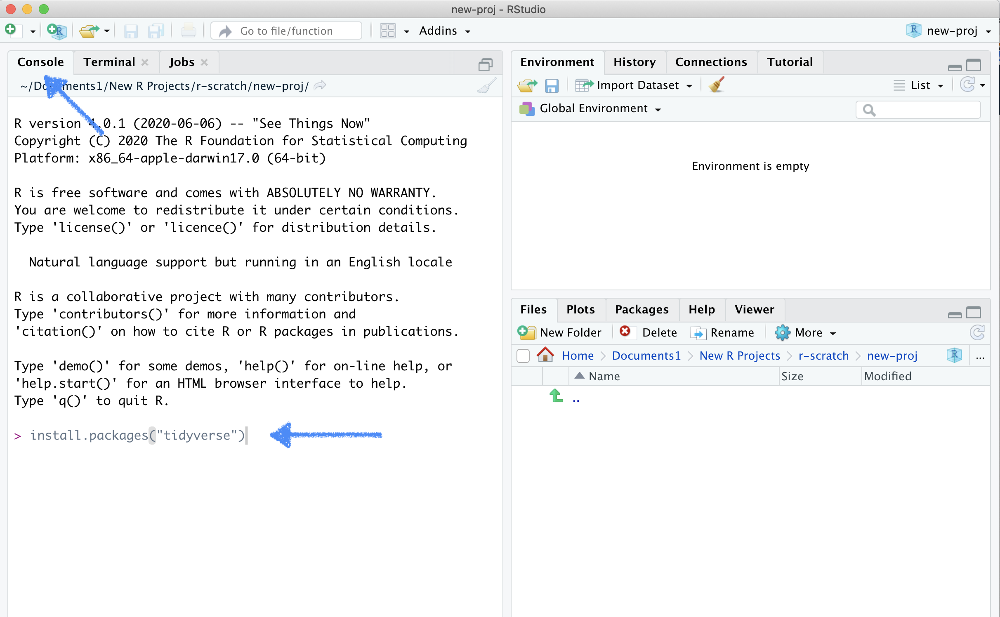

Welcome!
This is the class website. Here you will find posted resources for each lesson.
Installing R and RStudio
Before we can get started we need to install two different software programs, R and RStudio.
Start by installing R:
- Go to cran.r-project.org
- Windows users click Download R for Windows and on the next page install R for the first time and finally Download R 4.0.4 for Windows.
- Mac users click Download R for (Mac) OS X and on the next page pick the version matching the OS version you are using (for most users R-4.0.4.pkg will be the right choice).
Next we will install RStudio:
- Go to the rstudio.com download page
- Scroll down until you see a blue rectangle with the text DOWNLOAD RSTUDIO FOR X, where x is the OS of the machine you are using. Click to download.
- Alternatively, scroll down a bit more and find the right version of RStudio for your OS under the header All Installers.
Installing the tidyverse
The tidyverse is a suite of packages that will allow us to use some of the most common data science tools used in R and RStudio. The tidyverse doesn’t come built-in with R, so you’ll need to install it by doing the following:
- Open up RStudio
- Copy and paste the following into the Console pane of RStudio (see the image below as a reference):
install.packages("tidyverse")

- Press the Enter key to run this line of code
- When you’ve installed the package successfully, the console will fill up with some code that you don’t have to worry about trying to read. It’s just R confirming that the tidyverse is now downloaded.
Now you’re all set to for the first session!